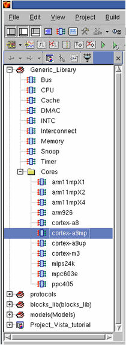
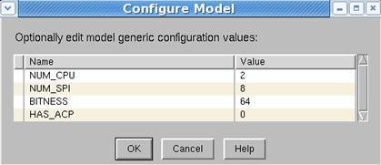
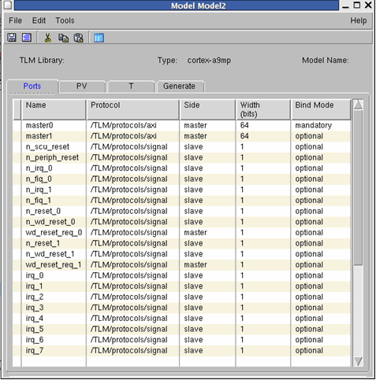
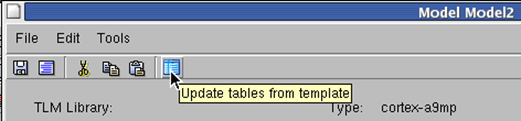
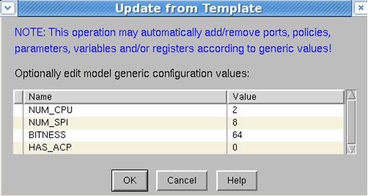

Core Creation Flow
Cortex A9 Based System - Formation Flow
The instantiation of a QEMU processor model within Vista is quite straight forward, and consists of the following steps:
- Launch Vista.
- Open an existing project or create a new one.
- Select the relevant processor under the Generic Library/Cores hierarchy, double click the cortex-a9mp processor.
Figure 8‑10.
QEMU Processors Models

- The “Configure Model” and A9 model dialogs open. Setting the generic parameters in the “Configure Model” will update the corresponding ports, parameters and registers in the model dialog. E.G.: “NUM_SPI” will set the number of “irq” (interrupts) ports in the model.

Figure 8‑11.
Cortex-a9mp Dialog

- Update from Template.

In case of the model being incorrectly modified, you can re-configure it through the Update from Template dialog. To open the Update from Template dialog, click the Update tables from template icon from the toolbar.

- Save and generate the model.